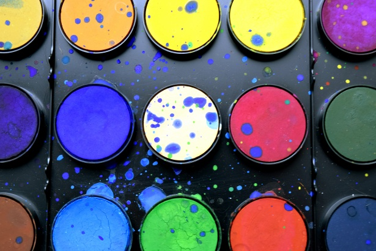
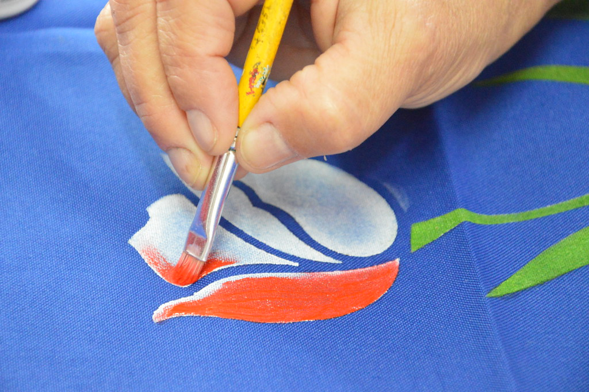

Cuide da sua paleta
Limpar uma paleta de cores é um processo simples e útil para manter a organização e precisão no trabalho. Para fazer isso, você pode remover cores não utilizadas, reorganizar tons semelhantes e até mesmo nomear as cores de maneira lógica e coerente. Isso ajuda a simplificar a seleção de cores e a tornar o processo de design mais eficiente e intuitivo. Além disso, é recomendável revisar periodicamente a paleta para garantir que apenas as cores essenciais e relevantes permaneçam, mantendo-a atualizada e funcional.
Ler mais
Deixando sua casa mais bonita
A pintura residencial é mais do que simplesmente aplicar tinta nas paredes. Ela transforma e renova os espaços, adicionando cor, personalidade e proteção às superfícies. Antes de começar, é crucial preparar a área, incluindo a limpeza das paredes, a remoção de imperfeições e a aplicação de primer, garantindo um resultado final mais duradouro e uniforme. Escolher as cores certas é fundamental para criar a atmosfera desejada, seja para um ambiente acolhedor, vibrante ou relaxante. A pintura residencial não apenas melhora esteticamente um espaço, mas também pode influenciar positivamente o humor e a sensação de bem-estar dos moradores.
Ler mais

Pintura em terapia na terceira idade
criativa e bem-estar emocional. Essa prática não se trata apenas de criar arte, mas também de proporcionar um espaço relaxante e terapêutico para os idosos. Pintar pode ajudar a estimular a mente, melhorar a coordenação motora e até mesmo aliviar o estresse, oferecendo uma maneira agradável de explorar emoções e memórias. Além disso, essa atividade promove interação social, construindo conexões e fortalecendo o senso de comunidade entre os participantes.
Ler mais